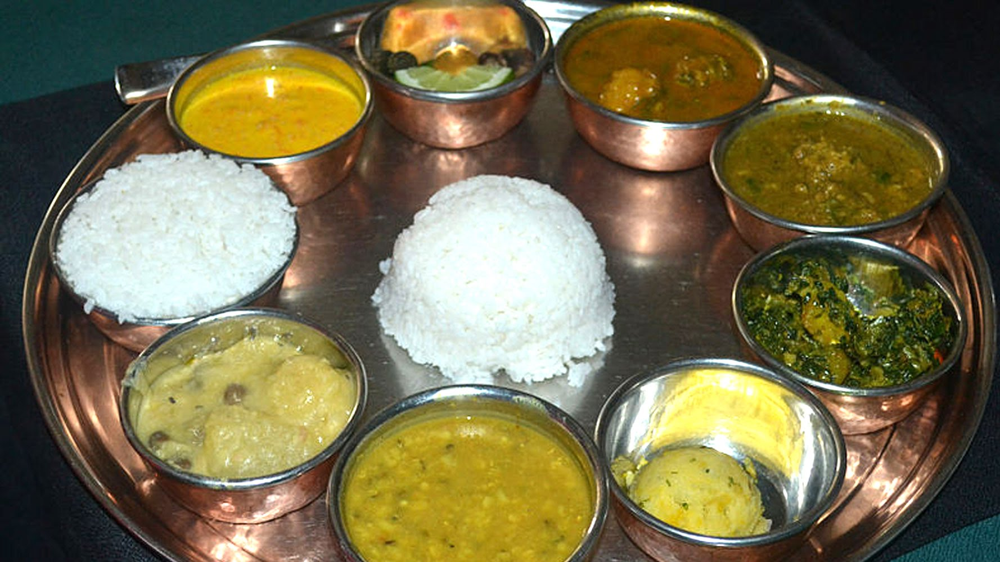
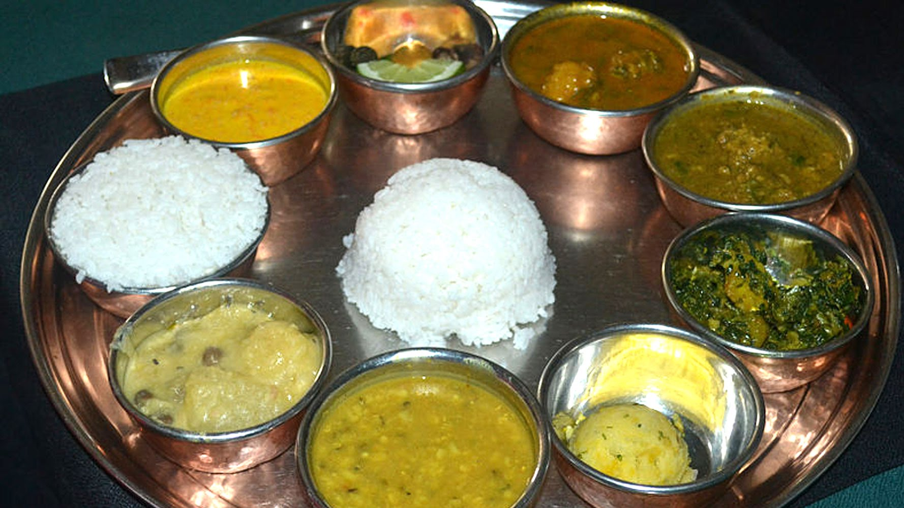

Show images
kumari khaja houseの自慢は、インドから運んだ独特のかまど「タンドール」。 高温の炭火を循環させて焼かれる肉料理はとってもジューシー。シェフおすすめは「骨なし皮付きジューシータンドリーチキン」 余分な油を落とし、まわりはパリッと中身はジューシー。 インド風パン「ナン」も、このタンドールで美味しくふわっと焼き上げます。カレーの種類はなんと20種類以上。中でもおすすめは「キーママサラ」と「バターチキン」。辛さもオーダーできて初めての方も安心。 自慢のタンドール料理はは本場のシェフと本場のスパイスでしか出せない味。本場インド＆ネパールの味を是非ご賞味下さい。
TOP PAGE


 
